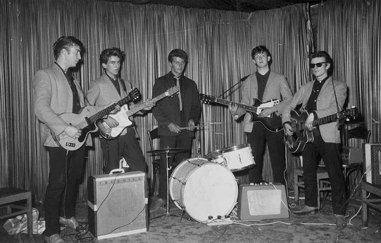
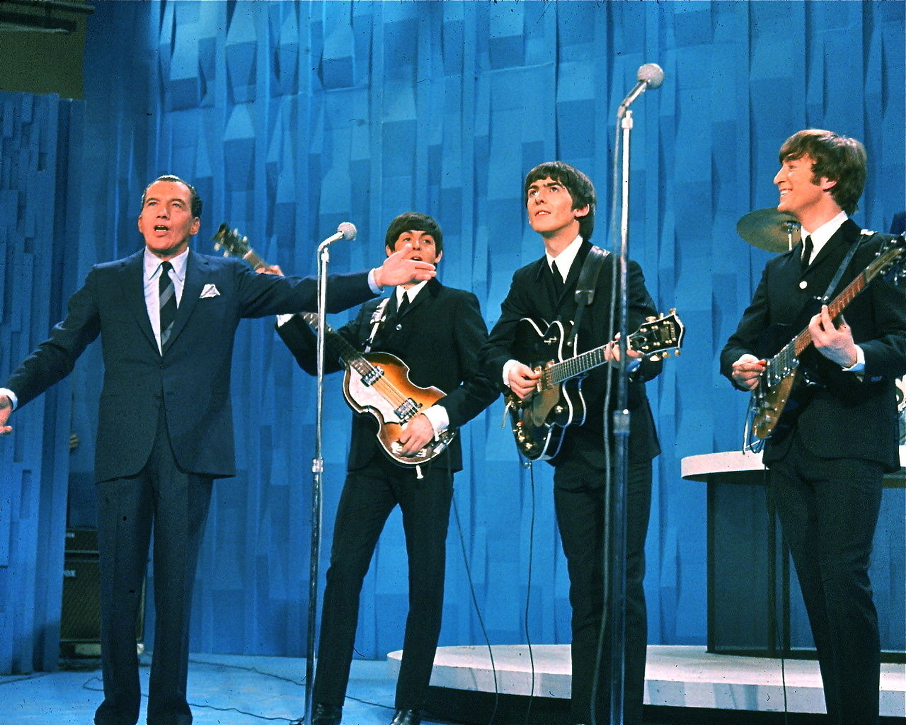
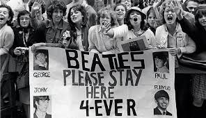
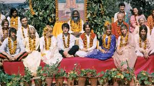
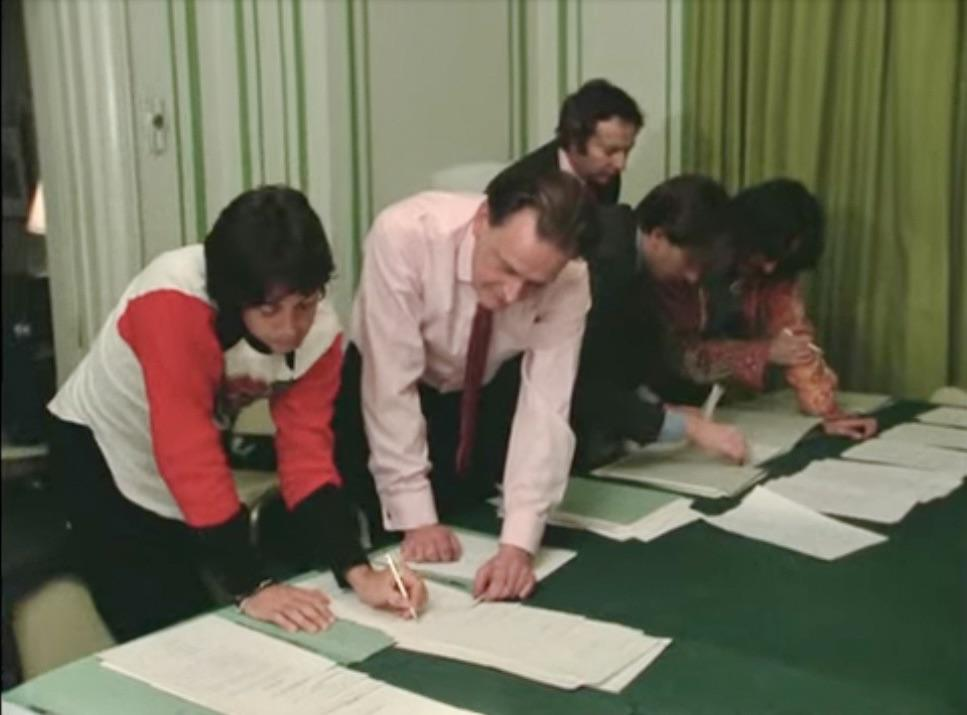
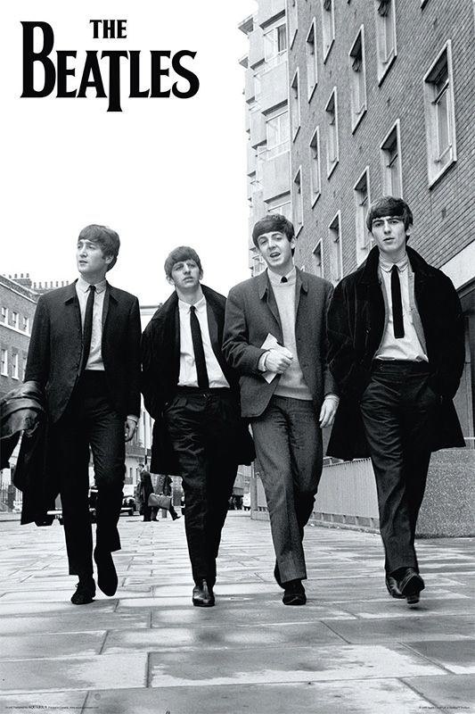

Curiosidades |
- Inicios
- "Beatlemanía"
- La India
- La separación
- Otras Curiosidades
|
Inicios |
|

19 Agosto, 1960
|
- La banda estuvo a punto de no existir: cuando audicionaron para una discográfica, fueron rechazados porque pensaban que el rock estaba pasando de moda.
- Antes de ser famosos, tocaron durante largas temporadas en Hamburg, donde llegaron a presentarse hasta 8 horas seguidas. Eso les ayudó a mejorar muchísimo como músicos.
- La banda estuvo a punto de no existir: cuando audicionaron para una discográfica, fueron rechazados porque pensaban que el rock estaba pasando de moda.
|
|

The Ed Sullivan Show, 1964
|
- The Beatles llegaron a Estados Unidos en 1964, poco tiempo después del asesinato de John F. Kennedy en 1963.
- En ese momento, el país estaba pasando por una etapa de tristeza y tensión, y la aparición de la banda ayudó a levantar el ánimo de muchos jóvenes.
- Su presentación en el programa de Ed Sullivan fue vista por millones de personas y marcó el inicio de una nueva etapa cultural en Estados Unidos.
- Algunos historiadores consideran que la música de los Beatles fue parte de un cambio generacional después de la era de Kennedy, simbolizando esperanza y renovación.
|
“Beatlemanía” |
|

EE. UU., 1964
|
- La Beatlemanía fue el fenómeno de fanatismo masivo que se generó alrededor de The Beatles en los años 60.
- Miles de fans, sobre todo adolescentes, gritaban, lloraban y se desmayaban en los conciertos
- El ruido del público era tan fuerte que muchas veces ni los propios John Lennon, Paul McCartney, George Harrison y Ringo Starr podían escucharse entre ellos
- La locura era tal que necesitaban seguridad extrema para moverse, y en aeropuertos eran perseguidos por multitudes
- Dejaron de hacer conciertos en 1966 porque los gritos del público eran tan fuertes que no podían escucharse entre ellos. Además, querían experimentar más en el estudio.
|
La India |
|

India, 1968
|
- George Harrison se interesó profundamente por la cultura y música de la India, especialmente por el sitar, un instrumento tradicional.
- Aprendió a tocarlo con el famoso músico Ravi Shankar, lo que influyó en varias canciones del grupo. Gracias a esto, The Beatles incorporaron sonidos y estilos orientales en su música, algo muy innovador en los años 60.
- En 1968, viajaron a la India para estudiar meditación con Maharishi Mahesh Yogi, buscando paz y crecimiento espiritual.
- Durante ese viaje compusieron muchas canciones que luego formarían parte de sus álbumes.
|
La Separación |
|

Firma de disolución de los Beatles, 1974
|
- Aunque la banda se separó oficialmente en 1970, los problemas empezaron mucho antes, alrededor de 1968.
- Uno de los conflictos principales fue entre John Lennon y Paul McCartney, ya que ambos tenían ideas diferentes sobre la música y el rumbo del grupo.
- La presencia de Yoko Ono en el estudio generó tensiones, porque no era común que alguien externo estuviera siempre en las grabaciones.
- Tras la muerte de su mánager Brian Epstein en 1967, la banda perdió una figura clave que mantenía el orden y la unión del grupo.
- Fue Paul McCartney quien inició una demanda en 1970 para disolver formalmente la sociedad del grupo.
- Finalmente, en 1974, los cuatro integrantes firmaron el acuerdo que oficializaba la disolución definitiva.
- John Lennon firmó los documentos en New York City mientras estaba de vacaciones en un parque de diversiones de Disney
|
Otras Curiosidades |
|

|
- Lucy in the Sky with Diamonds, el título viene de un dibujo hecho por el hijo de Lennon. Muchos pensaron que hacía referencia a drogas, pero Lennon lo negó
- En 1969, tocaron su último concierto en vivo en el techo de su estudio en London. Fue sorpresa total y la policía tuvo que intervenir por el ruido
- Muchas canciones complejas nunca fueron interpretadas en conciertos porque eran imposibles de reproducir con la tecnología de la época.
- Después de una frase polémica de John Lennon diciendo que eran “más famosos que Jesús”, varias radios dejaron de pasar su música en EE.UU.
- Durante el White Album, las tensiones eran tan fuertes que grababan en salas separadas. Apenas hablaban entre ellos.
- George Harrison tenía muchas canciones, pero John Lennon y Paul McCartney no le daban espacio. Eso generó bastante frustración.
- Ob-La-Di, Ob-La-Da, John Lennon odiaba esta canción. Incluso llegó a grabarla con frustración después de discutir con McCartney.
- Maxwell’s Silver Hammer, a muchos miembros no les gustaba porque McCartney insistía en repetirla demasiadas veces.
|